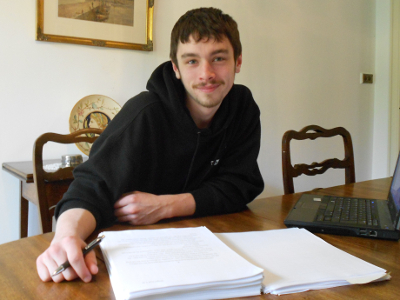

Deborah Turner Harris
I have a Ph.D. in Medieval English Literature. I've been a professional novelist for over 20 years, with 13 published novels and a number of short stories to my credit. I'm also an Honorary Lecturer for the University of St. Andrews, where I teach Medieval Literature, Old English Poetry, and Creative Writing. My overlapping experience as an academic, a writer, and a teacher has made me an expert text doctor.
So how can I help you? Thanks to my academic training, I am a discerning critical reader, whether I'm evaluating a literary classic or the first draft of an unpublished novel. At the same time, being a writer myself, I've grappled with my fair share of writing problems, and have developed practical strategies for solving them.
Training and experience have made me a discerning analyst. My professional clients include Jane Yolen, America's leading writer of children's and young adult fiction, and Elizabeth Kerner, author of the best-selling Kolmar series. I'm also receptive to the work of previously unpublished authors. You will find comments on my editorial skills under Testimonials.
Jamie Harris
I am a graduate from the University of Dundee with an Honours degree in English and Creative Writing. I have been accepted into the University's post-graduate Masters program where I will be working towards an M-Litt degree in Writing Practice and Study.
My interest in writing goes right back to primary school and this interest has only grown throughout my time in education. For my Advanced Higher English grade I wrote my first folio of graded creative work. To hone my skills, I have participated in a number of online writing workshops such as webook.com and wattpad.com and have become well known on the sites as a thorough and honest editor. I have since expanded my editorial experience to include working with more advanced writers, both electronically and in person, with fellow students of creative writing. In class I developed a bit of a reputation as the guy who was willing to be honest, and give good, hard, constructive feedback.
This journey of editorial work has now culminated with the publication of The Billion Dollar Marriage Contract by Alyssa Urbano, the first published novel which I had the pleasure of editing in its entirety. It is available in hard-copy, on Amazon Kindle and Goodreads
You will find a comment from her under Testimonials.
So why me? To me, this is more than a job, it's a passion - the kind of thing I do instead of watching a film or playing a video game. With two published authors as parents, I am in a better position than most to appreciate just what it takes for a novel to really flourish. With the time I have spent refining my editorial approach online, I am in a perfect position to help budding writers take their work to the next level.